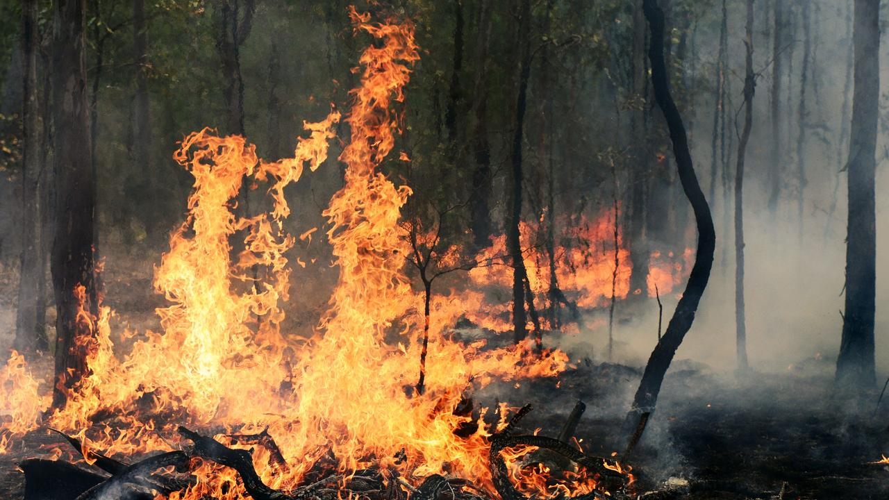

Fire Preparedness
🔥 Fire Hazards and Safety Tips
Fire: A Vital Yet Dangerous ForceFire is essential to human life—used for cooking, warmth, and industry—but it also poses serious risks when uncontrolled. From house fires and wildfires to electrical blazes, fire can spread rapidly, causing injury, property damage, and even loss of life. Understanding how fires start and how to respond is key to staying safe.
✅ Fire Safety Tips
Preventing Fires:
- Check Smoke Alarms: Test them monthly and change batteries every 6–12 months.
- Be Careful with Open Flames: Never leave candles or stoves unattended.
- Use Electrical Devices Safely: Don’t overload outlets or use damaged cords.
- Store Flammables Properly: Keep things like gasoline and cleaning products away from heat sources.
- Dispose of Cigarettes Safely: Always extinguish fully before discarding.
During a Fire:
- Get Out, Stay Out: Leave immediately—don’t try to gather belongings.
- Call Emergency Services: Dial your local emergency number once you're safe.
- Stop, Drop, and Roll: If your clothes catch fire, stop moving, drop to the ground, and roll to smother the flames.
- Stay Low: Smoke rises—crawl low to the ground to breathe better air when escaping.
- Use the Back of Your Hand: Test doors before opening them; if they’re hot, find another exit.
After a Fire
- Don’t Re-enter Until Cleared: Wait for fire officials to say it’s safe.
- Check for Hazards: Watch for structural damage, toxic fumes, or hot spots.
- Contact Your Insurance Provider: Document damage for claims if necessary.
- Seek Support: Fires can be traumatic—don’t hesitate to get emotional or community support.
. 🚒 Pro Tip: Have a fire escape plan at home and practice it with your family at least twice a year.